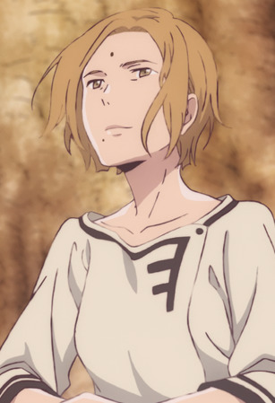

|
Ami Mizuno |
- Sailor Moon
- Sailor Moon R
- Sailor Moon R: The Movie
- Sailor Moon R: Make-Up! Sailor Senshi
- Sailor Moon S
- Sailor Moon S: The Movie
- Sailor Moon Super S: The Movie
- Sailor Moon Super S
- Sailor Moon Super S Plus: Ami's First Love
- Sailor Moon Super S Special
- Sailor Moon Sailor Stars
- Sailor Moon Sailor Stars: Hero Club
- Sailor Moon Memorial
- Sailor Moon R Memorial
- Sailor Moon S Memorial
- Sailor Moon Super S Memorial
- Sailor Moon Sailor Stars Memorial
|
Ami Mizuno/Sailor Mercury is a quiet bookworm in usagi's class. She is very intelligent and sweet. Her shy personality masks a passion for knowledge and takes care of people around her. She wants to becomea doctor one day. |
 |
Keroberos |
- Cardcaptor Sakura
- Cardcaptor Sakura Movie 1
- Cardcaptor Sakura Movie 2: The Sealed Card
- Cardcaptor Sakura: Leave it to Kero-chan
- Tsubasa Chronicle 2nd Series
- Cardcaptor Sakura: Clear Card Prologue
- Cardcapter Sakura: Clear Card
|
Keroberos is the guardian of sun appointed by Clow Reed. After Clow Reed death, he chooses Sakura to be the next master od the Clow Cards. He becomes good friend with Sakura and her friend Tomoyo. He is bossy, demanding and a glutton but he cares for Sakura. He loves video games and sweets. Aya Hisakawa voices Kero false form. |
 |
Luna Carson |
|
Luna Carson is the younger sister of Luka Carson, the bus driver to Mount Quena. She lives at the Purity Canyon rest stop lodge. She helps tourists and continues to research Pokemon habitats around Mount Quene. She has a love of the freshwater on Mount Quena and Cullen. |
 |
Portia |
|
Portia is Romeo's mother. She is a kind and intelligent woman who prays for Romeo. She greets Romeo with a smile. |
 |
Queen Coco Rose |
|
Queen Coco Rose is the former reignning queen od Sauville. She is the main focus in the biggest unsolved case in Sauville. She is love by many people. |
|  |
Taisha |
|
Taisha was the Mayor of the Mud Whale. She is kind and relay on Chakuro to write archives for her. She cares for the Marked and Unmarked citizens of Mud Whales. She has no interest in love because of her mayor position. |
 |
Youko Nakajima |
|
Youko Nakajima was 16 year-old honor student of Japan and now the Queen of Kei. She is the daughter of Ritsuko Nakajims and Masashi Nakajima. Her main worries are her red hair and recurring dream that haunts her. When she is Queen, she wants to learn about the problems in the kingdom. Despite her being a weak, very withdrawn and not wanting attention to herself, she continues to grow strong and mature. She becomes empathetic to people around her. |


.jpg)